Getting started
Berlinan is a generative MIDI sequencer for macOS 14 or later. It plays several short melodic loops that repeat, slowly shift against each other because their lengths differ, and change only a little at a time. It makes no sound itself: it sends MIDI to Ableton Live or to hardware synths.
- Download the disk image, open it and drag Berlinan to Applications. The app is signed and notarized, so it opens without security warnings.
- Start Berlinan. It opens with the Demo trio (Pluck 1, Pluck 2 and Bass) in A minor, from a fresh random seed every session.
- Send it somewhere you can hear it. Pick the MIDI output and set up your synths as described in Connecting synths.
- Press Space. You should now hear the voices.
- Play with it. Press 1 to 7 to move the whole ensemble to another scale degree, N for new patterns in every voice, and watch the horizon strip announce what is about to change.
Musical changes wait for the next bar line; a single voice's new pattern waits for the end of its own loop. So you can press a button a little early and it still lands in time.
The main window
The window is built in horizontal bands, top to bottom.
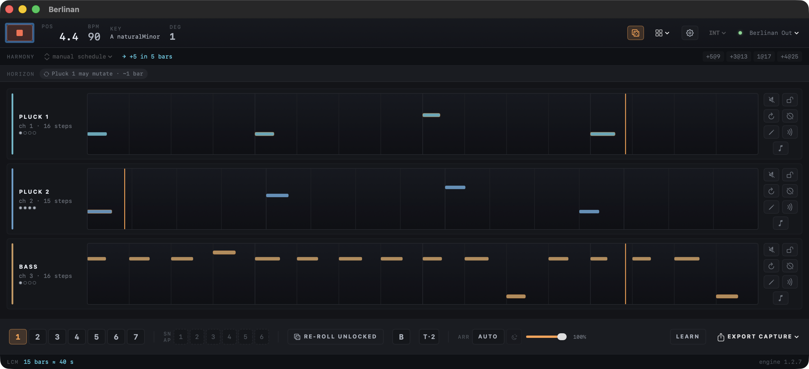
1 2 3 4 5 6- 1Transport bar
- Play/stop, position, tempo, key and degree; new seed, templates, settings, clock source and MIDI output.
- 2Harmony strip
- How the harmony moves and the next harmonic changes.
- 3Horizon strip
- A plain-language list of everything that is about to happen.
- 4Voice lanes
- One lane per voice, with its pattern, playhead and controls. Scroll when there are more voices than fit.
- 5Performance panel
- The jam controls: degrees, snapshots, B-part, arranger, density, MIDI learn and export.
- 6LCM footer
- When all loops line up again, and the engine version.
Hold the pointer over any control to see a short tooltip.
Transport bar
Play and readouts
- 1Play / Stop Space
- Starts and stops the ensemble. Stopping silences every note at once, including long drones. Every play starts the piece from its beginning; each play-to-stop pass is recorded as a take.
- 2POS
- The position as bar.beat while playing, —.— when stopped.
- 3BPM
- The tempo. Change it in Project settings; in EXT or LINK mode it follows the external clock.
- 4KEY
- The home note and scale every voice shares, for example A naturalMinor.
- 5DEG
- The current transposition: 1 is home, +3 means the ensemble plays three scale degrees up. It turns orange when you are away from home. Degree button 4 shows here as +3.
New seed, templates, settings, sync and output
- 1New seed N
- New patterns for every voice from the same setup. While playing they take over at the next bar. ⌘Z brings the previous ones back.
- 2Templates
- Starting points. See Templates.
- 3Project settings
- Key, scale, tempo, meter and slides. See Project settings.
- 4Clock source
- INT, EXT or LINK. See Clock sync.
- 5MIDI output
- Where the notes go. See MIDI output.
Templates
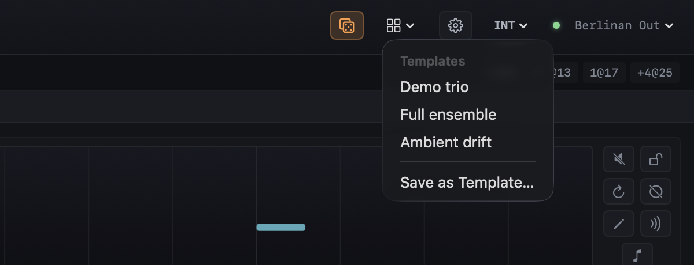
Click the grid icon to start from a template. Each one starts from a fresh seed, so you never get the same piece twice.
- Demo trio: two plucks of 16 and 15 steps over a 16-step bass. The default when the app starts.
- Full ensemble: six voices on channels 1 to 5 and 10: two plucks, a walking bass line, a chord pad, a lead (it can take over an extracted melody, see Lane menu) and a steady kick drum (Heartbeat).
- Ambient drift: built on a held drone, about one change a minute, with the arranger switched on and two CC scenes (closed and open) that slowly close and open the synths' filters.
The built-in templates start in A minor. Templates you saved yourself appear under My templates. Save as Template… stores the current setup there (see Projects and templates).
Picked while playing, a template takes over at the next bar without stopping the clock; the horizon shows TEMPLATE … · next bar until then.
Project settings
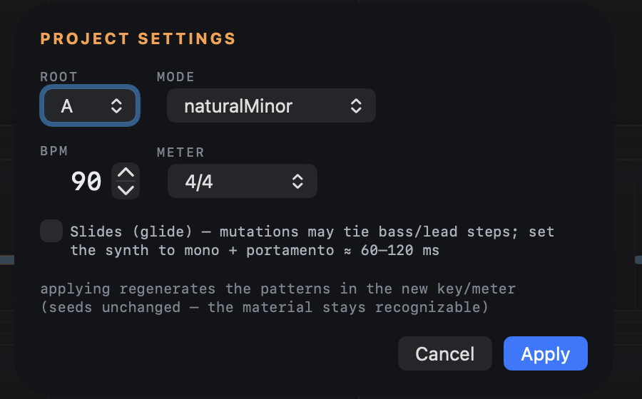
1 2 3 4Click the gear to open the sheet, change values and press Apply.
- 1Root and Mode
- The key. Modes: naturalMinor, dorian, phrygian, mixolydian, lydian, lydianDominant, harmonicMinor, minorPentatonic, locrian and major.
- 2BPM
- 40 to 220 beats per minute.
- 3Meter
- 4/4, 3/4, 6/8, 7/8 (4+3 or 3+4), 5/4 (3+2) and 5/8 (3+2).
- 4Slides
- Lets mutations tie bass and lead steps into glides. Set those synths to mono with portamento of about 60 to 120 ms.
While playing, key and tempo changes land on the next bar; meter and slides need the transport stopped. Applied while stopped, the patterns regenerate in the new key or meter from the same seeds, so the material stays recognizable.
Clock sync
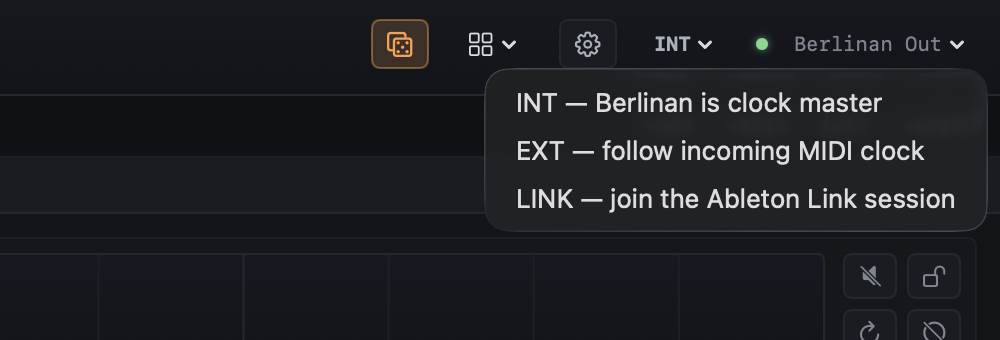
- INT: Berlinan is the clock master and sends MIDI clock and Start/Stop to its output, so arpeggiators and sequencers in your synths follow.
- EXT: Berlinan follows incoming MIDI clock. Start and Stop from the master start and stop Berlinan, and the tempo follows. The status reads EXT — waiting for clock until Start arrives.
- LINK: Berlinan joins the Ableton Link session on your network. Tempo and the downbeat stay in sync both ways. In place of the output name, the transport bar then shows how many other Link apps are connected (LINK — 2 peers).
The clock source can only be changed while stopped. Setup details are in Connecting synths.
MIDI output
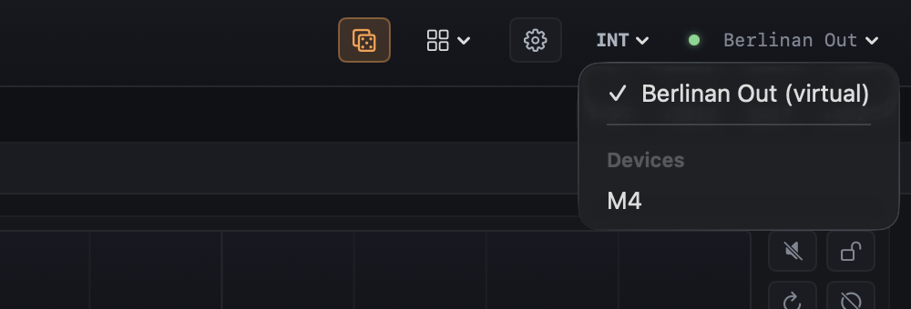
Click the output name at the right end of the transport bar (Berlinan Out by default) and choose:
- Berlinan Out (virtual): a virtual MIDI port that Ableton Live and other apps see as an input.
- A connected device under Devices: a USB synth, a DIN MIDI interface or an IAC bus. Notes, CC and clock go straight to it.
The choice is remembered. You can switch while playing; whatever still sounds on the previous output is silenced first. The dot next to the name is green when the output is reachable and red when the chosen device is unplugged (the name then reads disconnected); sending resumes when you plug it back in.
Harmony strip
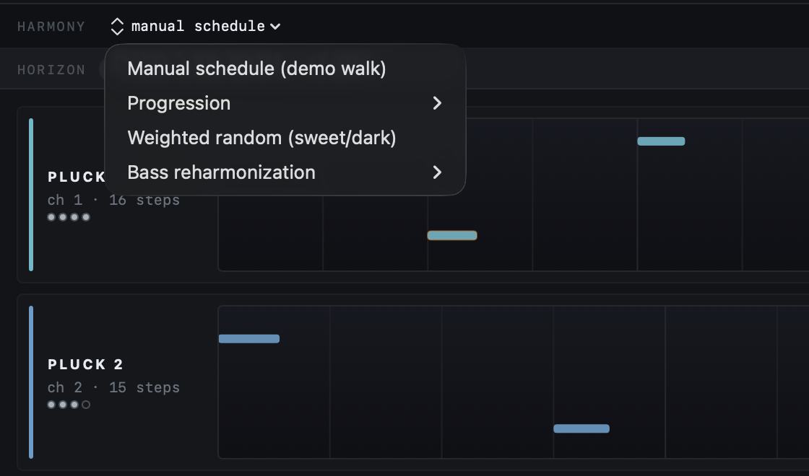
The strip shows how the harmony moves. Click the mode name (here manual schedule) to pick another mode (only while stopped).
- Manual schedule (demo walk): a fixed sequence of key shifts stored in the project.
- Progression: a looped walk through the scale degrees in its name, four bars per step: i-iv-v-i, 1-7-6-5, 1-5-6-7, 1-6-4-7, 1-6-4-1, 7-5-6, 1-b7-6-#5 or 6-5-4-1.
- Weighted random (sweet/dark): a surprise move every 8 to 16 bars, picked from scale degrees that sound bright (sweet) or dark.
- Bass reharmonization: the upper voices stay where they are and only the bass moves through the chosen progression.
Next to the mode, cyan text counts down to the next change (→ +5 in 5 bars). The chips on the right list the next four changes as degree@bar: +3@13 means three degrees up at bar 13, 1@17 back home at bar 17.
Horizon strip
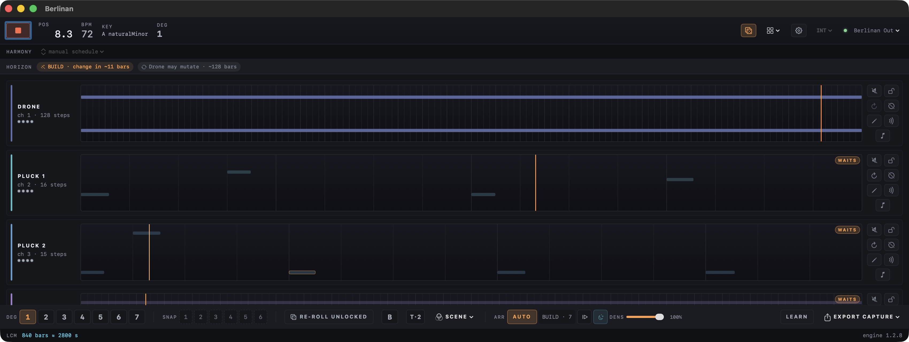
1 2The horizon strip tells you, in words, what is about to happen, so nothing surprises you mid-set. Each chip is one upcoming event:
- 1Arranger
- The arranger's current phase and how far away its next change is (BUILD · change in ~11 bars).
- 2Next mutation
- The voice whose pattern will be allowed to mutate soonest (Drone may mutate · ~128 bars).
Other chips appear for anything you have queued with the controls below, such as a key change, a snapshot recall, the B-part or a scene. Each says next bar or in N bars. With nothing scheduled the strip reads steady — nothing scheduled.
Voice lanes
Each voice has a lane: its name and channel on the left, the pattern in the middle and its buttons on the right.
Name and MIDI channel
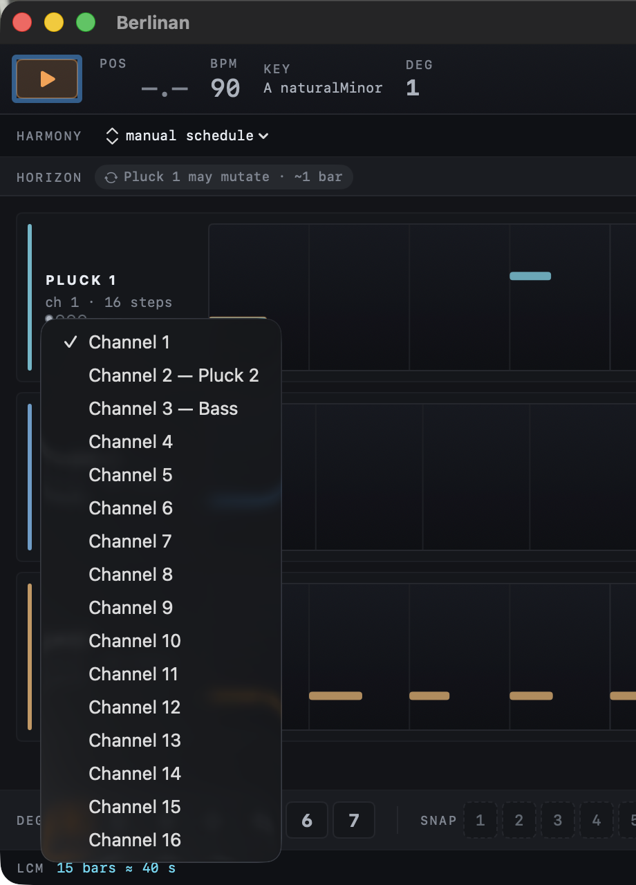
- 1Name
- The voice by its role: Pluck 1 and Pluck 2 (short plucked sequences), Bass, Pad (soft held chords), Lead, Drone (one held low note) and Heartbeat (a steady kick drum). A role used twice is numbered.
- 2MIDI channel
- Click ch N to send the voice on another channel, 1 to 16. A channel already used by another voice shows that voice's name. Works while playing; the change is saved with the project.
- 3Loop length
- The pattern's length in steps. Different lengths are what make the voices drift against each other.
- 4Play-count dots
- How many more times the pattern plays unchanged before it may mutate, up to four dots. All empty with a cyan ring means it may change now. On a locked voice the filled dots are amber; the Lock button tells you for sure.
Pattern strip
The strip shows the voice's current pattern on a step grid with stronger lines on the beats. Higher notes sit higher. Accented notes have an orange outline. The orange line is the voice's own playhead: since loops differ in length, the playheads of the lanes visibly drift apart.
- Drag the strip into an Ableton Live clip slot to get the current pattern as a MIDI clip, looped to a whole number of bars (up to 16).
- The strip dims when the voice is muted or held back by the arranger, and darkens for a blank cycle.
- A WAITS badge means the arranger is holding the voice back; it joins on a later bar.
Lane buttons
- 1Mute
- Silences the voice at once. The engine keeps running and the take keeps recording it, so unmuting brings it back in place.
- 2Lock
- Freezes the pattern: it keeps repeating and never mutates.
- 3Regenerate
- A new pattern for this voice at its next loop. A bass-melody voice gets a new walk over the same harmony. The drone and heartbeat are fixed and have nothing to regenerate. ⌘Z undoes it.
- 4Blank cycle
- The voice sits out one loop, then comes back. A classic way to make room.
- 5Edit
- Opens the pattern editor. The button stays amber while the voice plays a hand-edited pattern.
- 6MIDI delay
- Plays the voice's echoes as real MIDI notes, for setups without an audio delay. Turn the audio delay down on that channel when it is on (the Delay Cheat Sheet warns you).
- 7Melody extraction
- Mutes the voice except for three or four accented notes, which become a melody that evolves every few bars. Turn it off to get the full pattern back.
Lane menu
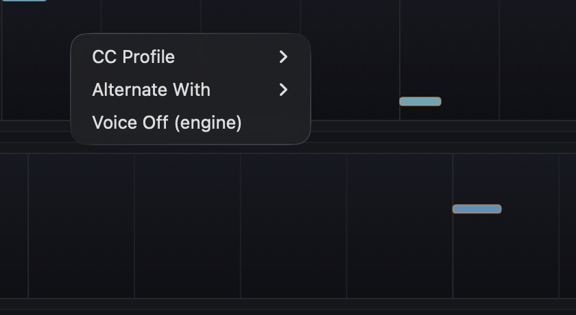
Right-click a pattern strip for more:
- Promote Melody to Lead: appears while melody extraction is on and the project has a lead voice; hands the extracted line to the lead at the next bar.
- Alternate With: this voice and another play in alternating four-bar phrases, call and response. Stop Alternation ends it.
- Voice Off / Voice On (engine): switches the voice out of (or into) the ensemble at the next bar; the arranger uses the same switch.
CC LFO
An LFO slowly turns one of your synth's knobs up and down over several bars, most often the filter: the slow breathing of the sound that is typical of the style. Berlinan sends it as MIDI CC on the voice's channel. Click ∿ ＋ under the voice name to add one; it starts on CC 74, the filter on many synths. A voice can have up to four LFOs; the second one starts on CC 71 (resonance). ∿ 1 shows or hides them.
- 1CC number
- The controller the LFO sends, 0 to 127. Type it in, or look it up with the magnifier.
- 2Magnifier
- Opens the parameter list (below). The chosen parameter's name then shows next to the number.
- 3Shape
- Sine, triangle, saw up, saw down, square, or S&H (sample and hold: a new random value on every eighth note).
- 4Cycle
- How many bars one full sweep takes, 1 to 64. S&H does not use it.
- 5Min and Max
- The range the LFO moves between, in CC values.
- 6Depth
- Drag up or down to widen or narrow the range around its middle; Min and Max follow.
- 7Phase
- Where in its cycle the LFO is when the piece starts. S&H does not use it.
- 8Curve
- One cycle of the LFO, the range dashed; the orange line shows where it is now. × removes the LFO and leaves the knob where it was.
Every change is heard at once, also while playing, and is saved with the project. Changing the cycle or phase while playing can make the value jump to another point of the curve. ⌘Z does not undo LFO changes.
The magnifier opens a list of 446 synths and effects from midi.guide. Pick the manufacturer, then the model, then the parameter; each column fills the one to its right. Type in the search field to filter by manufacturer or model name: digi finds Elektron, because of the Digitakt and Digitone. Double-click a parameter or press Select: the LFO takes its CC number, its name and its value range. The list comes from midi.guide, shared under CC BY-SA 4.0.
Pattern editor
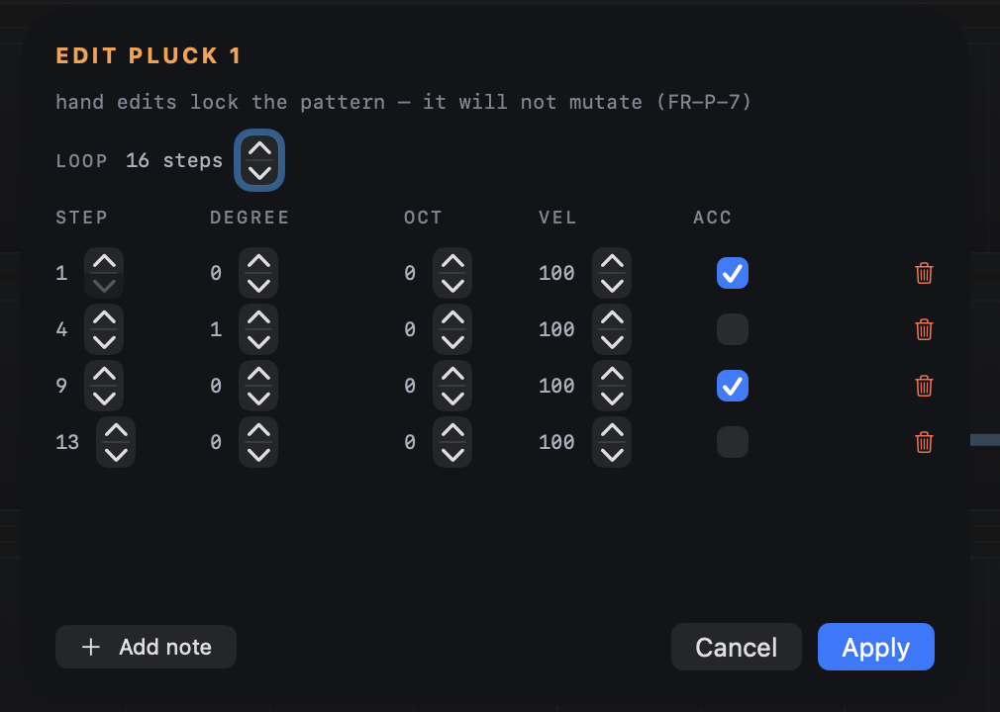
1 2 3The pencil button opens a note table for the voice's pattern.
- 1Loop
- The pattern length, 2 to 64 steps. A step is a sixteenth note (a thirty-second in /8 meters).
- 2Notes
- One row per note: STEP (where it starts), DEGREE (its place in the scale, counted from 0: 0 is the home note, 7 the home note an octave up, or 5 in minorPentatonic; the degree buttons and DEG count from 1), OCT (octave shift), VEL (how hard it is played, 1–127) and ACC (accent). The trash icon removes a note. Degrees follow the key and every transposition.
- 3Add note
- Adds a note on the first free step.
Apply replaces the pattern and locks it, so it will not mutate. While playing, the new pattern starts at the voice's next loop. The edit is saved with the project.
Performance panel
The band under the lanes holds the controls you play during a set. Musical moves land on the next bar.
Degrees 1–7
- 1Degree buttons
- Move every voice to scale degree 1 to 7 at the next bar. Because all voices share one scale, the whole ensemble changes harmony together. The active degree is lit; 1 is home.
- 2SNAP (snapshots)
- ⌥-click a slot to store the current patterns, their play counts and the harmony schedule; filled slots turn cyan. Click a filled slot to recall it at the next bar; ⌘Z undoes a recall. Snapshots are saved with the project.
Re-roll, B-part and tension
- 1RE-ROLL UNLOCKED
- Regenerates every voice that is not locked, each at its next loop. ⌘Z undoes it.
- 2B
- Starts a contrasting second section in one press: a chord progression begins and the bass gets a new line. Available while playing.
- 3T·n
- n is how many deliberately wrong notes this piece has left. Each press holds one note a half step above the home note at the next bar: a sharp clash that adds bite. Save them for a high point.
- 4SCENE
- Only shown when the project has CC scenes (Ambient drift has two). Pick a scene and all mapped controllers glide toward that timbre over eight bars. Available while playing.
Arranger
- 1ARR · AUTO
- Switches the arranger autopilot on or off. It builds the piece voice by voice (a drone opens it when there is one), lets it settle, varies it, fires the B-part, brings the opening theme back at the climax, thins it out and ends on a roots-only bar. It plays these moves by itself, but each one is also a control you can use yourself, and you can override it at any time.
- 2Phase
- The current phase and how many bars it has lasted: BUILD (voices enter one by one), BED (all voices settle), VAR (variation), B-PART (contrasting section), PAYOFF (the climax: the opening theme returns), SUBTR (voices drop out) or END.
- 3Advance
- Fires the arranger's next change at the next bar instead of waiting.
- 4Ambient mode
- Slows everything down to about one change a minute; patterns play 16 times before they may mutate. Set it while stopped.
- 5DENS
- Thins out or fills the whole mix: it caps how many notes each loop plays, and accents survive longest. The arranger raises density at the climax and lowers it on the way out.
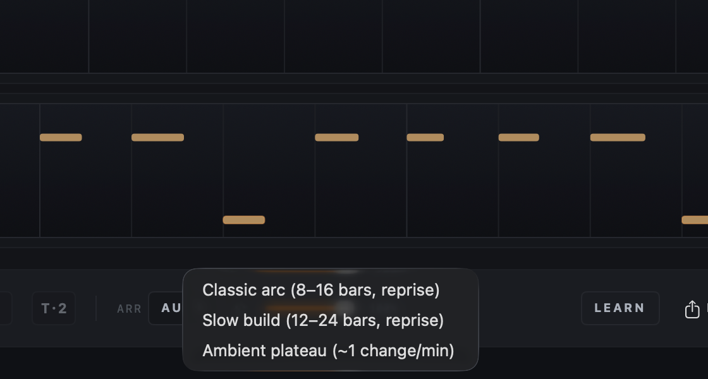
Right-click AUTO (while stopped) to choose a form: Classic arc (phases of 8 to 16 bars, with a reprise), Slow build (12 to 24 bars, with a reprise) or Ambient plateau (about one change a minute).
MIDI learn
Map your controller's knobs and pads to Berlinan and leave the laptop alone.
- Route your controller to the virtual MIDI input Berlinan Control. Plugging it in is not enough; for example, in Live use a MIDI track with MIDI From set to your controller and MIDI To set to Berlinan Control, and Monitor set to In.
- Click LEARN 1. It reads LEARN: PICK A CONTROL.
- Click the control to map: play/stop, a degree button, new seed, re-roll, a snapshot slot, B or advance. It reads MOVE A KNOB….
- Move a knob or press a pad. The mapping is stored and survives restarts.
- Map more controls the same way, then click LEARN again to finish.
Only the press counts: a note-on, or a controller value of 64 or more, so a pad that sends a value on release does not trigger twice.
Export capture
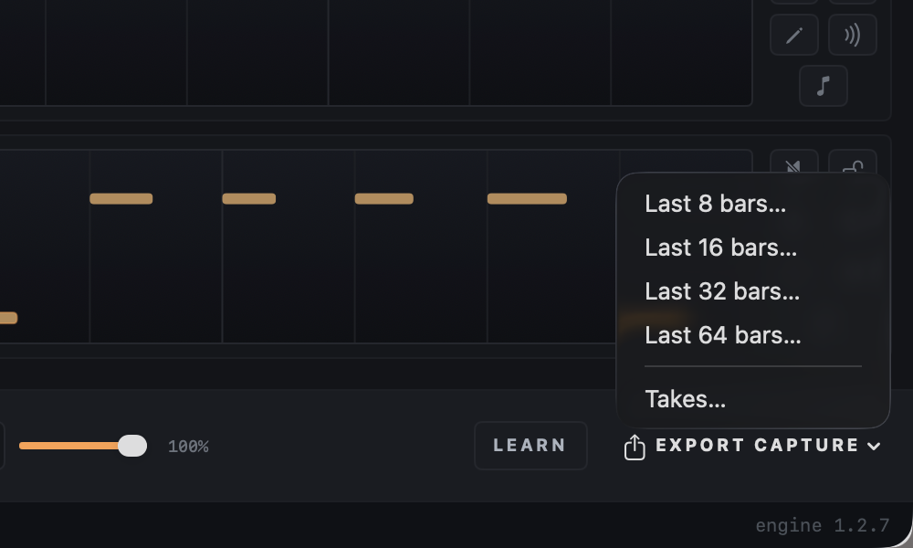
Berlinan always records the last hour of what it played. EXPORT CAPTURE 2 saves the last 8, 16, 32 or 64 whole bars as a multitrack MIDI file, one track per voice, ready to drop into Live. Takes… opens the Takes window.
The capture records what the engine played, including muted voices, so a voice you muted only while listening is still there in the file.
LCM footer
LCM tells you after how many bars, and how many seconds, all loops line up again (LCM: least common multiple of the loop lengths). Until then every bar is a combination you have not heard yet. The right end shows the engine version.
Takes window
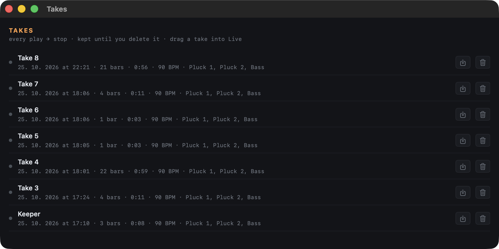
1 2 3Every play-to-stop pass is kept as a take, on disk, until you delete it. Open the window from Window ▸ Takes or Export Capture ▸ Takes…. The newest take is on top; the one being recorded shows a red dot and grows.
- 1Take
- Click the name to rename it, then press Return. Below it: when it was recorded, its length in bars and minutes, the tempo and the voices. Drag a take into Live or a Finder folder to get it as a MIDI file.
- 2Save as .mid
- Saves a multitrack MIDI file, one track per voice on its channel.
- 3Delete
- Removes the take from disk after you confirm.
A template loaded while playing starts a new take at its bar line. The take in progress is saved every 10 seconds, so a crash costs you at most those seconds.
Delay Cheat Sheet
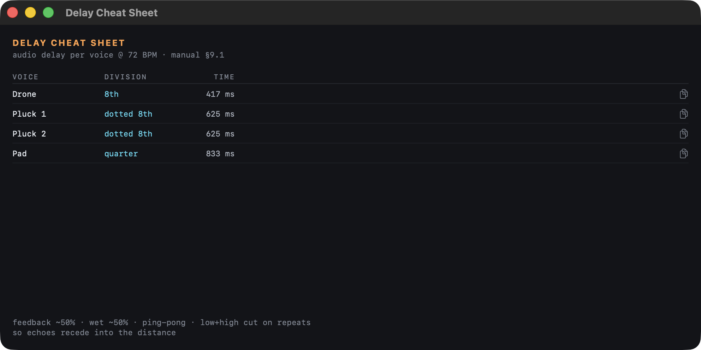
Tempo-synced delay is part of the genre's sound, next to reverb. Window ▸ Delay Cheat Sheet lists, for every voice, the audio delay division and time at the project tempo: dotted eighths for plucks and Heartbeat, eighths for bass and drone, quarters for pad and lead. The copy button puts the settings on the clipboard. Set feedback and wet to about 50 %, use ping-pong and cut lows and highs on the repeats.
When a lane's MIDI delay is on, the sheet warns you that the echoes are already in the MIDI.
Updates
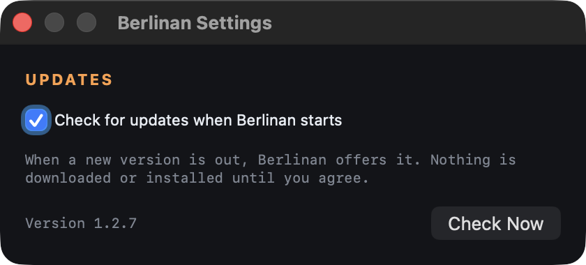
1 2When Berlinan starts, it checks whether a new version is out. If there is one, a window shows what is new, with Install Update, Remind Me Later and Skip This Version. Nothing is downloaded or installed until you click Install Update; Berlinan then downloads the new version, checks its signature, replaces itself and restarts.
- 1Check for updates when Berlinan starts
- On by default. Open Berlinan ▸ Settings… ⌘, and untick it to stop the check.
- 2Check Now
- Checks right away and also tells you when you are up to date. The same is Berlinan ▸ Check for Updates….
Connecting synths
Ableton Live
- In Berlinan, leave the output on Berlinan Out (virtual).
- In Live, create one MIDI track per voice with an instrument on it.
- Set each track's MIDI From to Berlinan Out and the channel to the voice's channel (the ch N label in its lane).
- Set Monitor to In (or arm the track) and press play in Berlinan.
To record, arm the tracks in Live, or simply export a take afterwards and drag it in.
Hardware synths
- Connect the synth over USB or a MIDI interface.
- Pick it in the MIDI output menu.
- Set the synth to receive on the channel of the voice it should play, or move the voice to the synth's channel with its channel menu. A multitimbral synth can play several voices, one per channel.
In INT mode Berlinan also sends MIDI clock, so the synth's arpeggiator or sequencer runs in time.
Following Live's tempo
- Ableton Link (easiest): switch Berlinan to LINK and turn Link on in Live. Tempo and the downbeat are shared both ways; start Berlinan with Space.
- MIDI clock: switch Berlinan to EXT. In Live's MIDI settings, turn on Sync for an output port Berlinan can hear, such as the IAC Driver bus (enable it in Audio MIDI Setup). Starting Live then starts Berlinan.
Projects and templates
- File ▸ Save Project As… ⇧⌘S saves a
.berlinanfile with the whole setup: voices, channels, key, tempo, harmony mode, hand-edited patterns, the seed and the snapshot slots. - File ▸ Open Project… ⌘O opens one (while stopped). Opening restores the saved setup and seed. To keep a variation you like, store it in a snapshot slot before saving. A damaged file is refused with an explanation instead of being loaded.
- Templates ▸ Save as Template… stores the current setup as a template; it then appears under My templates. Unlike a project, a template always starts from a fresh seed.
Keyboard shortcuts
| Key | Action |
|---|---|
| Space | Play / stop |
| 1 – 7 | Move the ensemble to that scale degree at the next bar |
| N | New seed |
| ⌘Z | Undo the last regenerate, re-roll, snapshot recall, pattern edit or new seed |
| ⌥-click a slot | Store a snapshot |
| ⌘O | Open a project |
| ⇧⌘S | Save the project as… |
| ⌘, | App settings (updates) |
Concepts
- Repetition earns change
- New material plays unchanged four times (sixteen in ambient mode) before it may mutate. A mutation is a small change: a few notes move to other scale degrees, one note shifts slightly in time or the accents move. After each mutation the count starts again. The play-count dots show where each voice stands.
- Degrees, not notes
- Patterns are written in scale degrees. Transposing moves every voice by the same number of degrees within the scale, so harmony stays in key.
- Phasing
- Voices loop at different lengths and drift against each other until they line up again after the LCM shown in the footer.
- Seed
- A number that decides every random choice. The same project and seed always give the same music; a new seed gives a new piece from the same setup.
- Next bar
- Harmony and arrangement changes land on the next bar line. A single voice's new pattern starts when its own loop comes round. Mute and Stop act at once.
Troubleshooting
I press play but hear nothing
Check the output: with Berlinan Out, a track in Live must listen to Berlinan Out on the voice's channel with monitoring on. With a device, the dot must be green and the synth must receive on the voice's channel. In EXT mode, Berlinan waits for Start from the clock master.
The output shows “disconnected”
The chosen device is unplugged or switched off. Plug it back in and sending resumes on its own, or pick another output.
Two voices sound on the same synth
They share a MIDI channel. Open a lane's channel menu: a channel used by another voice shows its name.
A menu or button is greyed out
Some settings only change while stopped: clock source, harmony mode, meter, slides, ambient mode and File ▸ Open Project…. The arranger form (right-click AUTO) also changes only while stopped; while playing the choice is ignored. B, advance, tension and scenes are the opposite: they only work while playing.
A note keeps sounding
Press stop: Berlinan sends note-offs and All Notes Off on every channel it used.